Last updated: 2022-05-31
Checks: 7 0
Knit directory: Locus_Coruleus/
This reproducible R Markdown analysis was created with workflowr (version 1.7.0). The Checks tab describes the reproducibility checks that were applied when the results were created. The Past versions tab lists the development history.
Great! Since the R Markdown file has been committed to the Git repository, you know the exact version of the code that produced these results.
Great job! The global environment was empty. Objects defined in the global environment can affect the analysis in your R Markdown file in unknown ways. For reproduciblity it’s best to always run the code in an empty environment.
The command set.seed(20220516) was run prior to running
the code in the R Markdown file. Setting a seed ensures that any results
that rely on randomness, e.g. subsampling or permutations, are
reproducible.
Great job! Recording the operating system, R version, and package versions is critical for reproducibility.
Nice! There were no cached chunks for this analysis, so you can be confident that you successfully produced the results during this run.
Great job! Using relative paths to the files within your workflowr project makes it easier to run your code on other machines.
Great! You are using Git for version control. Tracking code development and connecting the code version to the results is critical for reproducibility.
The results in this page were generated with repository version cca88ad. See the Past versions tab to see a history of the changes made to the R Markdown and HTML files.
Note that you need to be careful to ensure that all relevant files for
the analysis have been committed to Git prior to generating the results
(you can use wflow_publish or
wflow_git_commit). workflowr only checks the R Markdown
file, but you know if there are other scripts or data files that it
depends on. Below is the status of the Git repository when the results
were generated:
Ignored files:
Ignored: .Rhistory
Ignored: .Rproj.user/
Ignored: analysis/Seurat_proc_LC.nb.html
Ignored: analysis/test.nb.html
Note that any generated files, e.g. HTML, png, CSS, etc., are not included in this status report because it is ok for generated content to have uncommitted changes.
These are the previous versions of the repository in which changes were
made to the R Markdown (analysis/Seurat_proc_LC.Rmd) and
HTML (docs/Seurat_proc_LC.html) files. If you’ve configured
a remote Git repository (see ?wflow_git_remote), click on
the hyperlinks in the table below to view the files as they were in that
past version.
| File | Version | Author | Date | Message |
|---|---|---|---|---|
| Rmd | cca88ad | cheglok81 | 2022-05-31 | wflow_publish("./analysis/Seurat_proc_LC.Rmd") |
| html | 79c3bce | cheglok81 | 2022-05-31 | Build site. |
| Rmd | e407493 | cheglok81 | 2022-05-31 | wflow_publish(".Rprofile", update = TRUE) |
| html | e407493 | cheglok81 | 2022-05-31 | wflow_publish(".Rprofile", update = TRUE) |
This is an R Markdown Notebook. When you execute code within the notebook, the results appear beneath the code.
Try executing this chunk by clicking the Run button within the chunk or by placing your cursor inside it and pressing Ctrl+Shift+Enter.
rm(list = ls())
library(Seurat)Attaching SeuratObjectAttaching splibrary(dplyr)
Attaching package: 'dplyr'The following objects are masked from 'package:stats':
filter, lagThe following objects are masked from 'package:base':
intersect, setdiff, setequal, unionlibrary(patchwork)
library(magrittr)
# Load the LC dataset
Loco.data <- Read10X(data.dir = "~/data/Locus_Coruleus2/count/")
# Initialize the Seurat object with the raw (non-normalized data).
Loco <- CreateSeuratObject(counts = Loco.data, project = "Locus_Coruleus", min.cells = 3, min.features = 200)
# The [[ operator can add columns to object metadata. This is a great place to stash QC stats
Loco[["percent.mt"]] <- PercentageFeatureSet(Loco, pattern = "^mt-")
# Visualize QC metrics as a violin plot
VlnPlot(Loco, features = c("nFeature_RNA", "nCount_RNA", "percent.mt"), ncol = 3)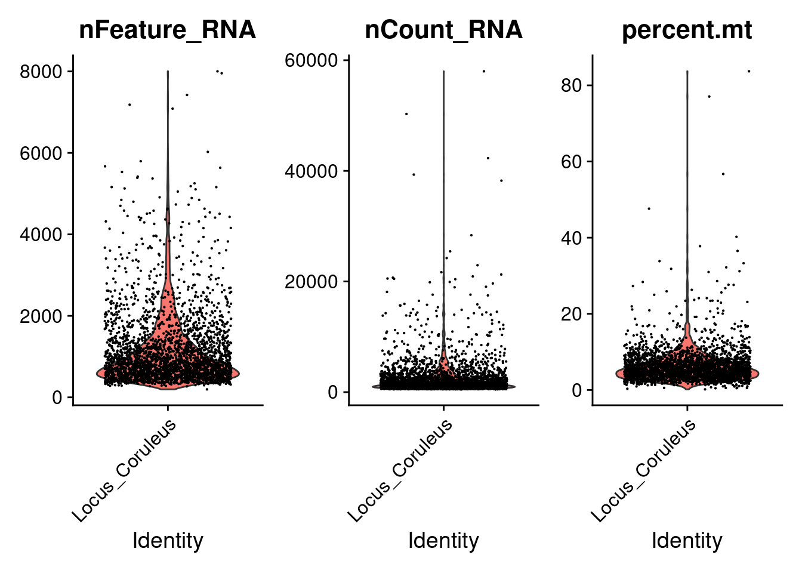
| Version | Author | Date |
|---|---|---|
| 79c3bce | cheglok81 | 2022-05-31 |
| e407493 | cheglok81 | 2022-05-31 |
# FeatureScatter is typically used to visualize feature-feature relationships, but can be used
# for anything calculated by the object, i.e. columns in object metadata, PC scores etc.plot1 <- FeatureScatter(Loco, feature1 = "nCount_RNA", feature2 = "percent.mt")
plot2 <- FeatureScatter(Loco, feature1 = "nCount_RNA", feature2 = "nFeature_RNA")
plot1 + plot2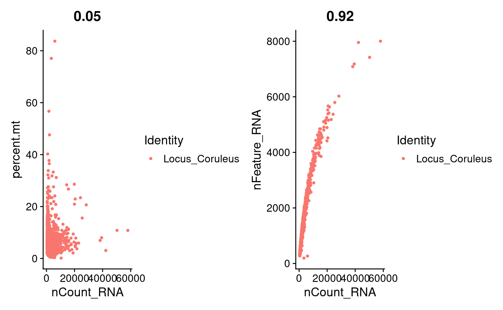
| Version | Author | Date |
|---|---|---|
| 79c3bce | cheglok81 | 2022-05-31 |
| e407493 | cheglok81 | 2022-05-31 |
Loco <- subset(Loco, subset = nFeature_RNA > 200 & percent.mt < 20)
# normalize and run dimensionality reduction on control dataset
Loco <- SCTransform(Loco, return.only.var.genes = FALSE, verbose = FALSE) %>%
RunPCA(npcs = 100, verbose = FALSE) %>%
RunUMAP(dims = 1:20, verbose = FALSE) %>%
FindNeighbors(reduction = "pca", dims = 1:100, n.trees = 200, annoy.metric = "cosine", verbose = FALSE) %>%
FindClusters(resolution = 0.3, algorithm = 1, verbose = FALSE)Warning: The default method for RunUMAP has changed from calling Python UMAP via reticulate to the R-native UWOT using the cosine metric
To use Python UMAP via reticulate, set umap.method to 'umap-learn' and metric to 'correlation'
This message will be shown once per sessionDimHeatmap(Loco, dims = 1:20, cells = 500, balanced = TRUE)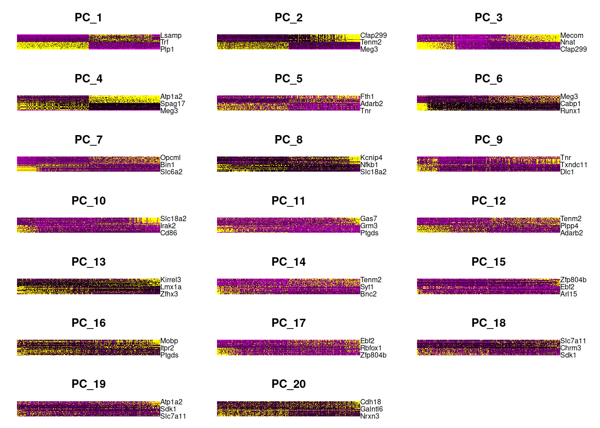
| Version | Author | Date |
|---|---|---|
| 79c3bce | cheglok81 | 2022-05-31 |
| e407493 | cheglok81 | 2022-05-31 |
ElbowPlot(Loco, ndims = 30)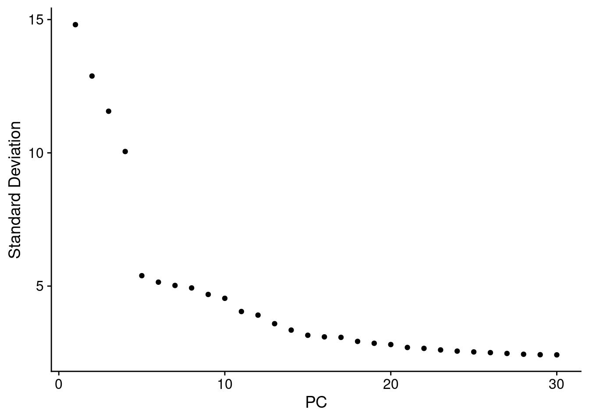
| Version | Author | Date |
|---|---|---|
| 79c3bce | cheglok81 | 2022-05-31 |
| e407493 | cheglok81 | 2022-05-31 |
DimPlot(Loco, reduction = "umap")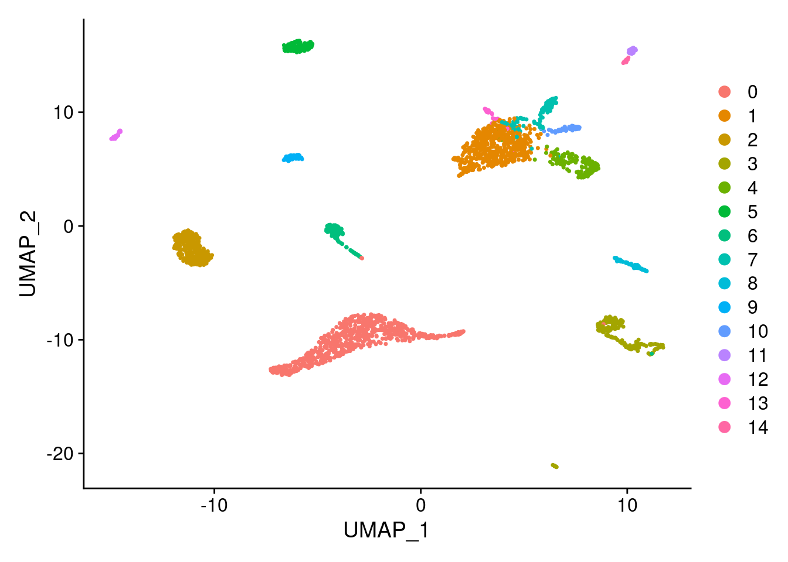
| Version | Author | Date |
|---|---|---|
| 79c3bce | cheglok81 | 2022-05-31 |
| e407493 | cheglok81 | 2022-05-31 |
FeaturePlot(Loco, features = c("Slc17a7"), order = T)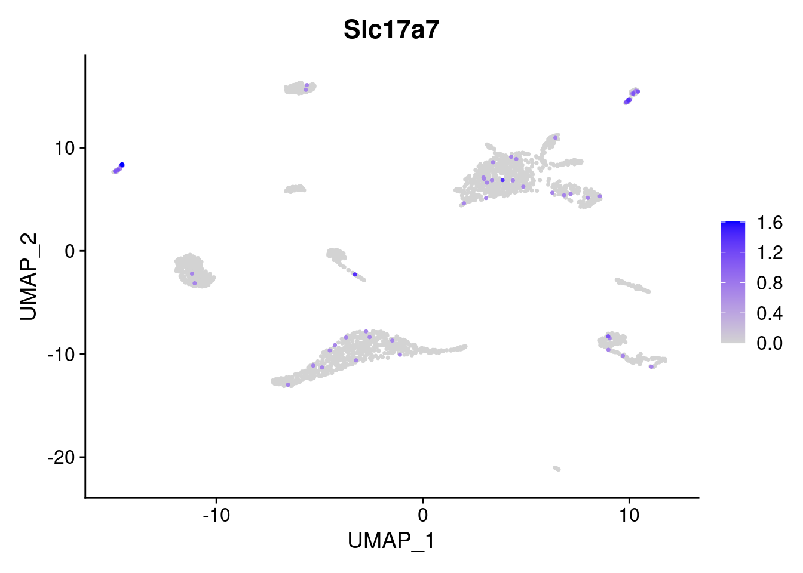
| Version | Author | Date |
|---|---|---|
| 79c3bce | cheglok81 | 2022-05-31 |
| e407493 | cheglok81 | 2022-05-31 |
Loco %<>% FindClusters(resolution = 0.3, algorithm = 1, verbose = FALSE)
DimPlot(Loco, reduction = "umap")
| Version | Author | Date |
|---|---|---|
| 79c3bce | cheglok81 | 2022-05-31 |
| e407493 | cheglok81 | 2022-05-31 |
head(Idents(Loco), 5)AAACCCAAGACGATAT-1 AAACCCACAACCGCTG-1 AAACCCATCTTCTAAC-1 AAACGAAAGCGTGAAC-1
0 4 0 2
AAACGAAGTGGTAACG-1
0
Levels: 0 1 2 3 4 5 6 7 8 9 10 11 12 13 14Loco.markers <- FindAllMarkers(Loco, only.pos = TRUE, test.use = "wilcox", min.pct = 0.1, logfc.threshold = 0.25)Calculating cluster 0Calculating cluster 1Calculating cluster 2Calculating cluster 3Calculating cluster 4Calculating cluster 5Calculating cluster 6Calculating cluster 7Calculating cluster 8Calculating cluster 9Calculating cluster 10Calculating cluster 11Calculating cluster 12Calculating cluster 13Calculating cluster 14Loco.markers %>%
group_by(cluster) %>%
slice_max(n = 10, order_by = avg_log2FC)# A tibble: 150 × 7
# Groups: cluster [15]
p_val avg_log2FC pct.1 pct.2 p_val_adj cluster gene
<dbl> <dbl> <dbl> <dbl> <dbl> <fct> <chr>
1 0 3.77 1 0.416 0 0 Plp1
2 0 2.67 0.993 0.374 0 0 Pde4b
3 0 2.55 0.972 0.109 0 0 Mbp
4 0 2.39 0.965 0.246 0 0 Tmeff2
5 0 2.23 1 0.824 0 0 Pcdh9
6 0 2.07 0.985 0.472 0 0 Nkain2
7 0 2.02 0.929 0.188 0 0 Rnf220
8 0 1.99 0.962 0.29 0 0 Slc24a2
9 1.10e-306 1.97 0.929 0.251 1.81e-302 0 Plcl1
10 0 1.94 0.907 0.151 0 0 Dock10
# … with 140 more rowsLocon <- subset(Loco, idents = c(1,4,7,8,10,11,12,13,14))
RunPCA(Locon, npcs = 30, verbose = FALSE) %>%
RunUMAP(dims = 1:30, verbose = FALSE) %>%
FindNeighbors(reduction = "pca", dims = 1:30, n.trees = 200, annoy.metric = "cosine", verbose = FALSE) %>%
FindClusters(resolution = 0.3, algorithm = 1, verbose = FALSE)An object of class Seurat
34320 features across 1151 samples within 2 assays
Active assay: SCT (16437 features, 3000 variable features)
1 other assay present: RNA
2 dimensional reductions calculated: pca, umapDimHeatmap(Locon, dims = 1:20, cells = 500, balanced = TRUE)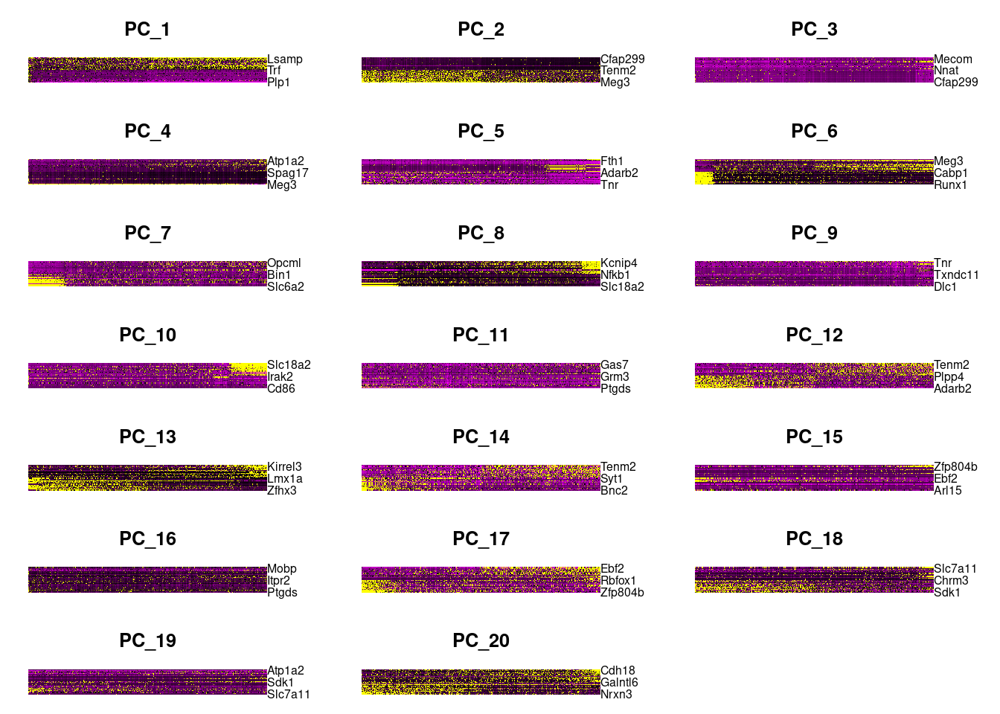
| Version | Author | Date |
|---|---|---|
| 79c3bce | cheglok81 | 2022-05-31 |
| e407493 | cheglok81 | 2022-05-31 |
DimPlot(Locon, reduction = "umap")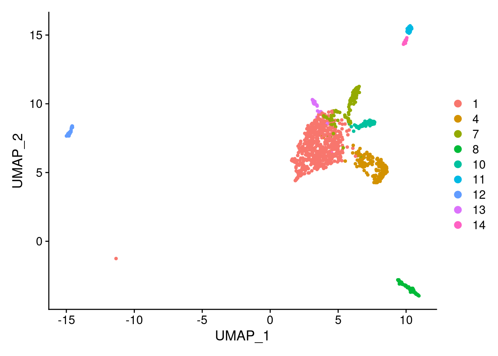
| Version | Author | Date |
|---|---|---|
| 79c3bce | cheglok81 | 2022-05-31 |
| e407493 | cheglok81 | 2022-05-31 |
Locon2 <- SCTransform(Locon, return.only.var.genes = FALSE, verbose = FALSE) %>%
RunPCA(npcs = 30, verbose = FALSE) %>%
RunUMAP( dims = 1:30, verbose = FALSE) %>%
FindNeighbors(reduction = "pca", dims = 1:30, n.trees = 200, annoy.metric = "cosine", verbose = FALSE) %>%
FindClusters(resolution = 0.3, algorithm = 1, verbose = FALSE)
DimHeatmap(Locon2, dims = 1:20, cells = 500, balanced = TRUE)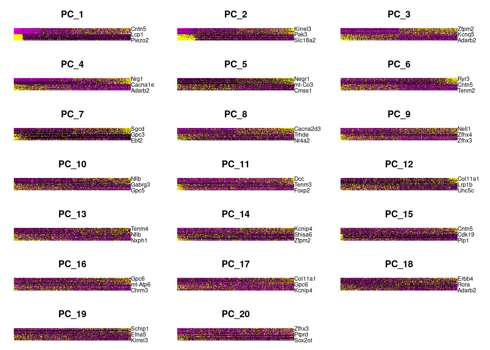
| Version | Author | Date |
|---|---|---|
| 79c3bce | cheglok81 | 2022-05-31 |
| e407493 | cheglok81 | 2022-05-31 |
DimPlot(Locon2, reduction = "umap")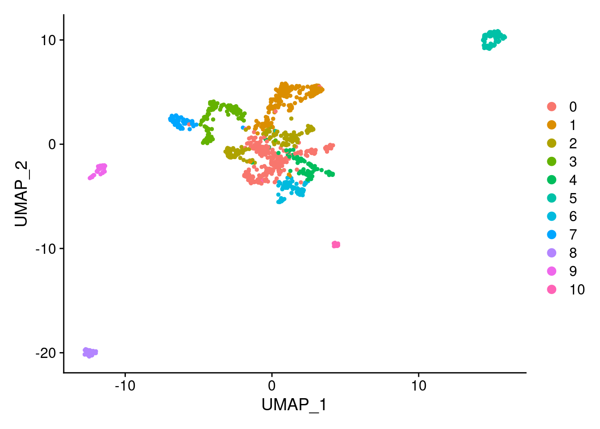
| Version | Author | Date |
|---|---|---|
| 79c3bce | cheglok81 | 2022-05-31 |
| e407493 | cheglok81 | 2022-05-31 |
FeaturePlot(Locon2, features = c("Gal", "Grp", "Pdyn", "Cartpt", "Bdnf", "Hcrtr1", "Eya2", "Th", "Dbh"), order = T)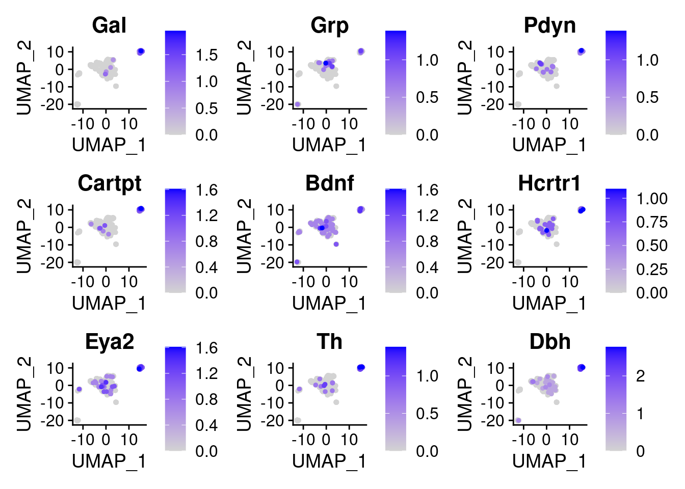
| Version | Author | Date |
|---|---|---|
| 79c3bce | cheglok81 | 2022-05-31 |
| e407493 | cheglok81 | 2022-05-31 |
LoconTH <- subset(Loco, idents = 8)
LoconTH <- FindNeighbors(LoconTH, reduction = "pca", dims = 1:30, n.trees = 200, annoy.metric = "cosine", verbose = FALSE) %>%
FindClusters(resolution = 0.3, algorithm = 1, verbose = FALSE)%>%
RunUMAP( dims = 1:30, verbose = FALSE)
DimHeatmap(LoconTH, dims = 1:20, cells = 500, balanced = TRUE)Warning: Requested number is larger than the number of available items (80).
Setting to 80.
Warning: Requested number is larger than the number of available items (80).
Setting to 80.
Warning: Requested number is larger than the number of available items (80).
Setting to 80.
Warning: Requested number is larger than the number of available items (80).
Setting to 80.
Warning: Requested number is larger than the number of available items (80).
Setting to 80.
Warning: Requested number is larger than the number of available items (80).
Setting to 80.
Warning: Requested number is larger than the number of available items (80).
Setting to 80.
Warning: Requested number is larger than the number of available items (80).
Setting to 80.
Warning: Requested number is larger than the number of available items (80).
Setting to 80.
Warning: Requested number is larger than the number of available items (80).
Setting to 80.
Warning: Requested number is larger than the number of available items (80).
Setting to 80.
Warning: Requested number is larger than the number of available items (80).
Setting to 80.
Warning: Requested number is larger than the number of available items (80).
Setting to 80.
Warning: Requested number is larger than the number of available items (80).
Setting to 80.
Warning: Requested number is larger than the number of available items (80).
Setting to 80.
Warning: Requested number is larger than the number of available items (80).
Setting to 80.
Warning: Requested number is larger than the number of available items (80).
Setting to 80.
Warning: Requested number is larger than the number of available items (80).
Setting to 80.
Warning: Requested number is larger than the number of available items (80).
Setting to 80.
Warning: Requested number is larger than the number of available items (80).
Setting to 80.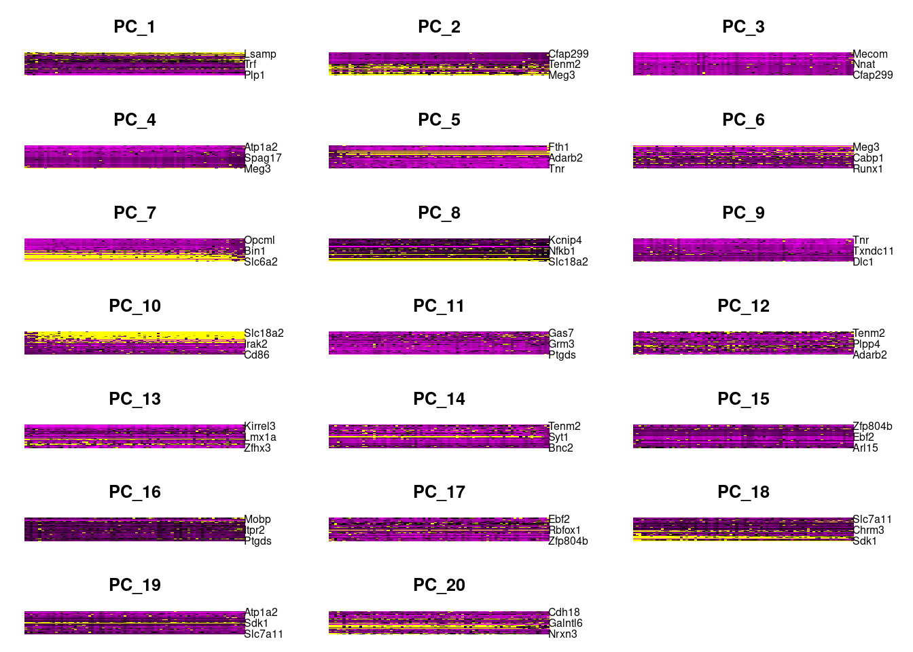
| Version | Author | Date |
|---|---|---|
| 79c3bce | cheglok81 | 2022-05-31 |
| e407493 | cheglok81 | 2022-05-31 |
ElbowPlot(LoconTH, ndims = 30)
| Version | Author | Date |
|---|---|---|
| 79c3bce | cheglok81 | 2022-05-31 |
| e407493 | cheglok81 | 2022-05-31 |
DimPlot(LoconTH, reduction = "umap")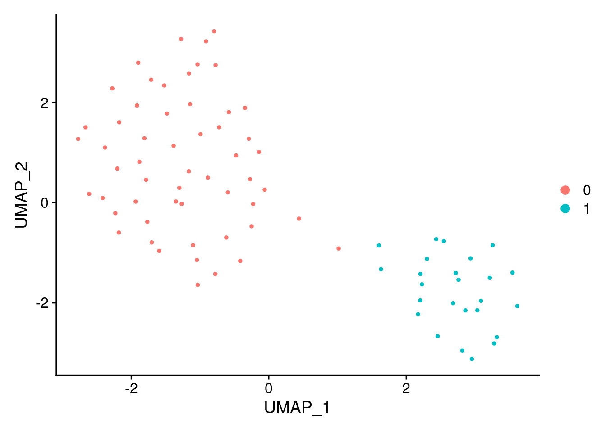
| Version | Author | Date |
|---|---|---|
| 79c3bce | cheglok81 | 2022-05-31 |
| e407493 | cheglok81 | 2022-05-31 |
FeaturePlot(LoconTH, features = c("Gal", "Grp", "Pdyn", "Cartpt", "Bdnf", "Th"), order = T)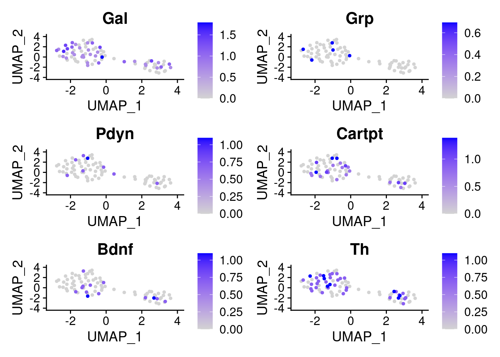
| Version | Author | Date |
|---|---|---|
| 79c3bce | cheglok81 | 2022-05-31 |
| e407493 | cheglok81 | 2022-05-31 |
Locon3 <- subset(Locon2, idents = 5)
RunPCA(Locon2, npcs = 30, verbose = FALSE) %>%
RunUMAP(dims = 1:30, verbose = FALSE) %>%
FindNeighbors(reduction = "pca", dims = 1:30, n.trees = 200, annoy.metric = "cosine", verbose = FALSE) %>%
FindClusters(resolution = 0.3, algorithm = 1, verbose = FALSE)An object of class Seurat
32614 features across 1151 samples within 2 assays
Active assay: SCT (14731 features, 3000 variable features)
1 other assay present: RNA
2 dimensional reductions calculated: pca, umapDimHeatmap(Locon3, dims = 1:20, cells = 500, balanced = TRUE)Warning: Requested number is larger than the number of available items (82).
Setting to 82.
Warning: Requested number is larger than the number of available items (82).
Setting to 82.
Warning: Requested number is larger than the number of available items (82).
Setting to 82.
Warning: Requested number is larger than the number of available items (82).
Setting to 82.
Warning: Requested number is larger than the number of available items (82).
Setting to 82.
Warning: Requested number is larger than the number of available items (82).
Setting to 82.
Warning: Requested number is larger than the number of available items (82).
Setting to 82.
Warning: Requested number is larger than the number of available items (82).
Setting to 82.
Warning: Requested number is larger than the number of available items (82).
Setting to 82.
Warning: Requested number is larger than the number of available items (82).
Setting to 82.
Warning: Requested number is larger than the number of available items (82).
Setting to 82.
Warning: Requested number is larger than the number of available items (82).
Setting to 82.
Warning: Requested number is larger than the number of available items (82).
Setting to 82.
Warning: Requested number is larger than the number of available items (82).
Setting to 82.
Warning: Requested number is larger than the number of available items (82).
Setting to 82.
Warning: Requested number is larger than the number of available items (82).
Setting to 82.
Warning: Requested number is larger than the number of available items (82).
Setting to 82.
Warning: Requested number is larger than the number of available items (82).
Setting to 82.
Warning: Requested number is larger than the number of available items (82).
Setting to 82.
Warning: Requested number is larger than the number of available items (82).
Setting to 82.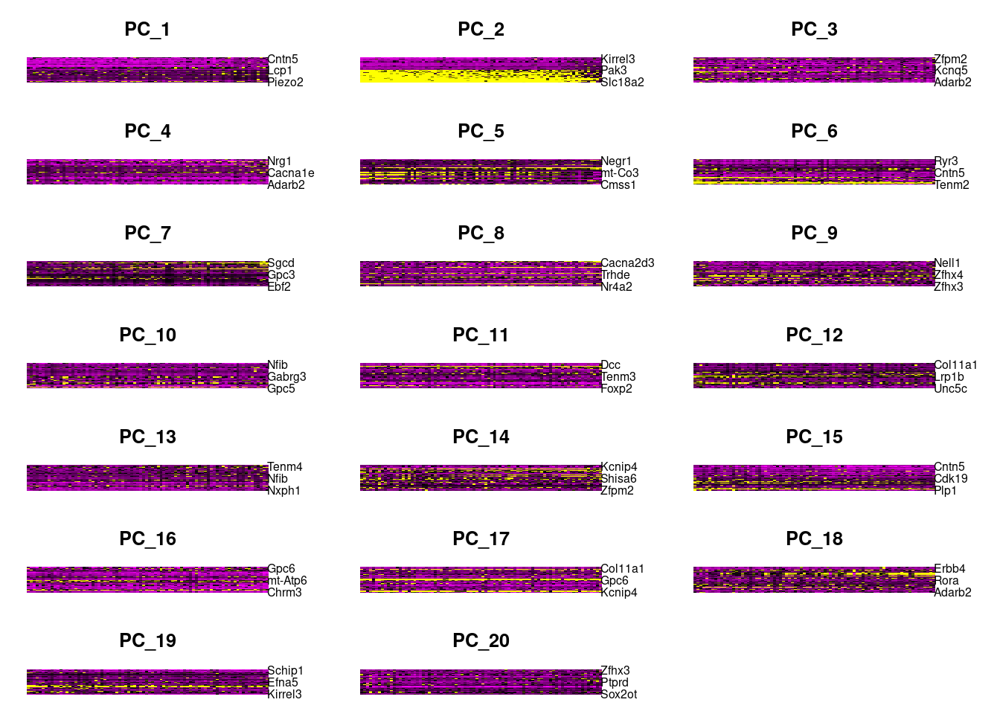
| Version | Author | Date |
|---|---|---|
| 79c3bce | cheglok81 | 2022-05-31 |
| e407493 | cheglok81 | 2022-05-31 |
FeaturePlot(Locon3, features = c("Gal", "Grp", "Pdyn", "Cartpt", "Bdnf", "Th", "Slc18a2", "Dbh"), order = T)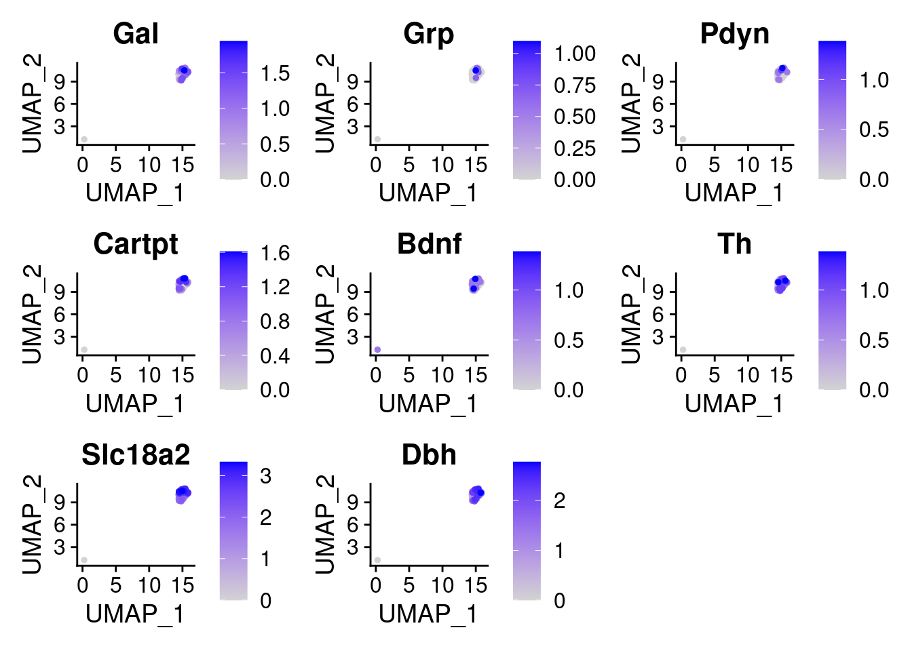
| Version | Author | Date |
|---|---|---|
| 79c3bce | cheglok81 | 2022-05-31 |
| e407493 | cheglok81 | 2022-05-31 |
Locon3th <- subset(Locon3, Slc18a2 > 1)FeaturePlot(Locon3th, features = c("Gal", "Grp", "Pdyn", "Cartpt", "Bdnf", "Th", "Slc18a2"), order = T)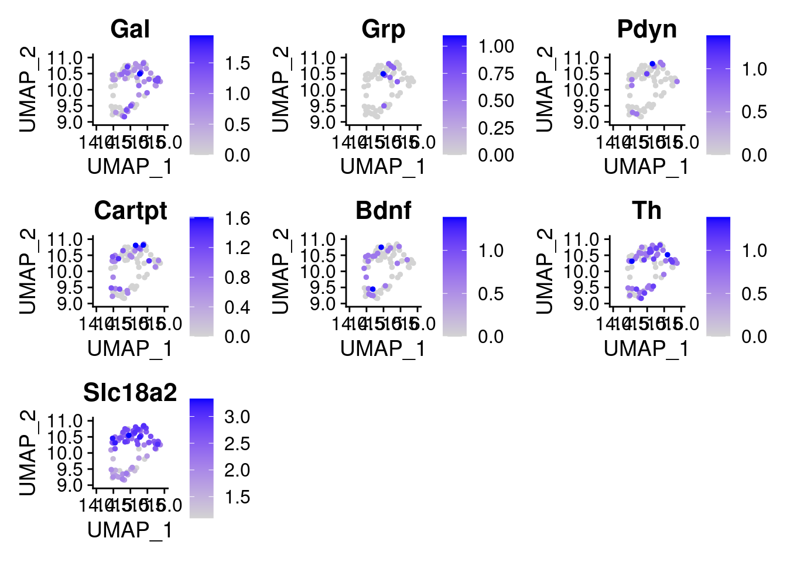
| Version | Author | Date |
|---|---|---|
| 79c3bce | cheglok81 | 2022-05-31 |
| e407493 | cheglok81 | 2022-05-31 |
Locon4 <- FindNeighbors(Locon, reduction = "pca", dims = 1:30, n.trees = 200, annoy.metric = "cosine", verbose = FALSE) %>%
FindClusters(resolution = 0.3, algorithm = 1, verbose = FALSE) %>%
RunUMAP( dims = 1:30, verbose = FALSE)
DimHeatmap(Locon4, dims = 1:20, cells = 500, balanced = TRUE)
| Version | Author | Date |
|---|---|---|
| 79c3bce | cheglok81 | 2022-05-31 |
| e407493 | cheglok81 | 2022-05-31 |
DimPlot(Locon4, reduction = "umap")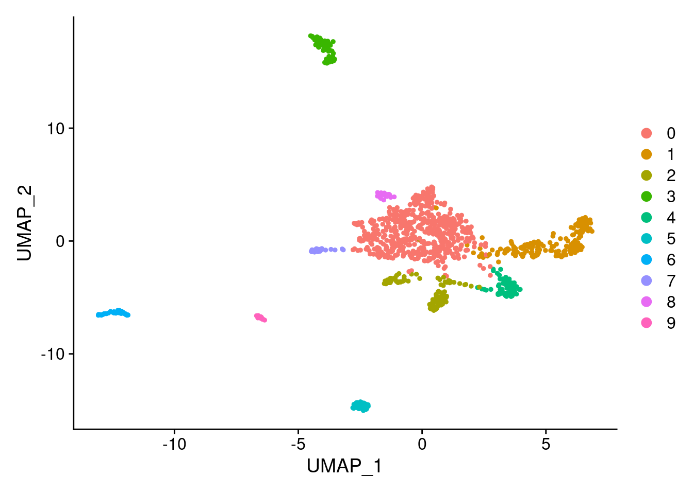
| Version | Author | Date |
|---|---|---|
| 79c3bce | cheglok81 | 2022-05-31 |
| e407493 | cheglok81 | 2022-05-31 |
FeaturePlot(Locon4, features = c("Gal", "Grp", "Sst", "Slc17a6", "Pdyn", "Cartpt", "Bdnf", "Th", "Slc18a2", "Dbh", "Gad1"), order = T)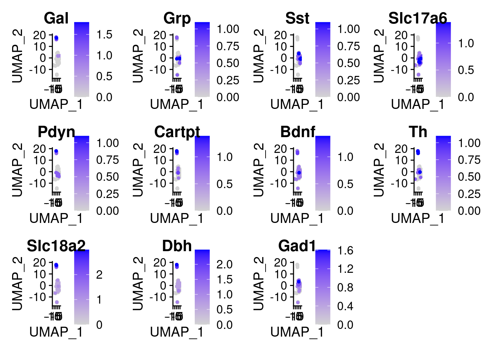
| Version | Author | Date |
|---|---|---|
| 79c3bce | cheglok81 | 2022-05-31 |
| e407493 | cheglok81 | 2022-05-31 |
SeuratDisk::SaveH5Seurat(Locon4,
filename = paste0("./data/",
Project(object = Locon4),
".h5Seurat"),
overwrite = TRUE)Registered S3 method overwritten by 'SeuratDisk':
method from
as.sparse.H5Group SeuratCreating h5Seurat file for version 3.1.5.9900Adding counts for RNAAdding data for RNANo variable features found for RNANo feature-level metadata found for RNAAdding counts for SCTAdding data for SCTAdding scale.data for SCTAdding variable features for SCTNo feature-level metadata found for SCTWriting out SCTModel.list for SCTAdding cell embeddings for pcaAdding loadings for pcaNo projected loadings for pcaAdding standard deviations for pcaNo JackStraw data for pcaAdding cell embeddings for umapNo loadings for umapNo projected loadings for umapNo standard deviations for umapNo JackStraw data for umapLoconTH4 <- subset(Locon4, idents = 3)
LoconTH4 <- FindNeighbors(LoconTH4, reduction = "pca", dims = 1:30, n.trees = 200, annoy.metric = "cosine", verbose = FALSE) %>%
FindClusters(resolution = 0.3, algorithm = 1, verbose = FALSE)%>%
RunUMAP( dims = 1:30, verbose = FALSE)
DimHeatmap(LoconTH4, dims = 1:20, cells = 500, balanced = TRUE)Warning: Requested number is larger than the number of available items (80).
Setting to 80.
Warning: Requested number is larger than the number of available items (80).
Setting to 80.
Warning: Requested number is larger than the number of available items (80).
Setting to 80.
Warning: Requested number is larger than the number of available items (80).
Setting to 80.
Warning: Requested number is larger than the number of available items (80).
Setting to 80.
Warning: Requested number is larger than the number of available items (80).
Setting to 80.
Warning: Requested number is larger than the number of available items (80).
Setting to 80.
Warning: Requested number is larger than the number of available items (80).
Setting to 80.
Warning: Requested number is larger than the number of available items (80).
Setting to 80.
Warning: Requested number is larger than the number of available items (80).
Setting to 80.
Warning: Requested number is larger than the number of available items (80).
Setting to 80.
Warning: Requested number is larger than the number of available items (80).
Setting to 80.
Warning: Requested number is larger than the number of available items (80).
Setting to 80.
Warning: Requested number is larger than the number of available items (80).
Setting to 80.
Warning: Requested number is larger than the number of available items (80).
Setting to 80.
Warning: Requested number is larger than the number of available items (80).
Setting to 80.
Warning: Requested number is larger than the number of available items (80).
Setting to 80.
Warning: Requested number is larger than the number of available items (80).
Setting to 80.
Warning: Requested number is larger than the number of available items (80).
Setting to 80.
Warning: Requested number is larger than the number of available items (80).
Setting to 80.
| Version | Author | Date |
|---|---|---|
| 79c3bce | cheglok81 | 2022-05-31 |
| e407493 | cheglok81 | 2022-05-31 |
DimPlot(LoconTH4, reduction = "umap")
| Version | Author | Date |
|---|---|---|
| 79c3bce | cheglok81 | 2022-05-31 |
| e407493 | cheglok81 | 2022-05-31 |
DimPlot(Locon4, reduction = “umap”)
FeaturePlot(LoconTH4, slot = "scale.data", features = c("Gal", "Grp", "Pdyn", "Cartpt", "Bdnf", "Calca", "Hcrtr1", "Sstr2", "Calcr", "Slc6a2", "Slc18a2", "Dbh"), order = T)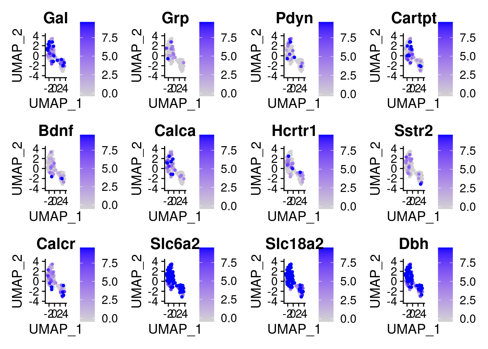
| Version | Author | Date |
|---|---|---|
| 79c3bce | cheglok81 | 2022-05-31 |
| e407493 | cheglok81 | 2022-05-31 |
LoconTH4.markers <- FindAllMarkers(LoconTH4, only.pos = TRUE, test.use = "MAST", min.pct = 0.1, logfc.threshold = 0.25)Calculating cluster 0
Done!Combining coefficients and standard errorsCalculating log-fold changesCalculating likelihood ratio testsRefitting on reduced model...
Done!Calculating cluster 1
Done!Combining coefficients and standard errorsCalculating log-fold changesCalculating likelihood ratio testsRefitting on reduced model...
Done!LoconTH4.markers %>%
group_by(cluster) %>%
slice_max(n = 10, order_by = avg_log2FC)# A tibble: 20 × 7
# Groups: cluster [2]
p_val avg_log2FC pct.1 pct.2 p_val_adj cluster gene
<dbl> <dbl> <dbl> <dbl> <dbl> <fct> <chr>
1 8.96e-10 1.42 1 0.88 0.0000147 0 Slc18a2
2 9.22e-10 1.12 0.927 0.4 0.0000152 0 Morf4l1
3 7.88e-10 1.10 0.964 0.4 0.0000129 0 Prnp
4 3.12e- 8 1.09 0.945 0.56 0.000512 0 Atp1b1
5 2.13e- 6 0.968 0.927 0.52 0.0351 0 Nap1l5
6 3.01e- 6 0.955 0.818 0.36 0.0495 0 Dlk1
7 1.22e- 6 0.927 0.891 0.48 0.0200 0 Ywhab
8 3.25e- 7 0.926 0.727 0.12 0.00534 0 Arl6ip1
9 6.36e- 9 0.923 0.927 0.28 0.000105 0 Actb
10 6.79e- 7 0.897 0.818 0.24 0.0112 0 Tmem30a
11 2.93e- 4 1.14 0.72 0.364 1 1 Robo1
12 1.52e- 8 0.975 1 0.891 0.000249 1 Frmd4a
13 2.98e- 7 0.917 1 0.909 0.00490 1 Lingo2
14 7.91e-11 0.896 1 1 0.00000130 1 Sdk1
15 2.42e- 9 0.877 1 0.855 0.0000399 1 Csmd1
16 1.26e-10 0.855 1 1 0.00000208 1 Nrg3
17 2.31e- 8 0.832 1 1 0.000379 1 Lsamp
18 2.01e- 5 0.822 0.96 0.927 0.330 1 Galntl6
19 2.25e- 5 0.793 0.76 0.418 0.369 1 Magi2
20 3.11e- 6 0.782 0.92 0.945 0.0511 1 Ank3 LoconTH4.markers <- FindAllMarkers(LoconTH4, only.pos = TRUE, test.use = "LR")Calculating cluster 0Warning: glm.fit: fitted probabilities numerically 0 or 1 occurred
Warning: glm.fit: fitted probabilities numerically 0 or 1 occurred
Warning: glm.fit: fitted probabilities numerically 0 or 1 occurred
Warning: glm.fit: fitted probabilities numerically 0 or 1 occurredCalculating cluster 1LoconTH4.markers %>%
group_by(cluster) %>%
slice_max(n = 10, order_by = avg_log2FC)# A tibble: 20 × 7
# Groups: cluster [2]
p_val avg_log2FC pct.1 pct.2 p_val_adj cluster gene
<dbl> <dbl> <dbl> <dbl> <dbl> <fct> <chr>
1 3.97e-10 1.42 1 0.88 0.00000653 0 Slc18a2
2 1.52e-10 1.12 0.927 0.4 0.00000250 0 Morf4l1
3 1.99e-11 1.10 0.964 0.4 0.000000328 0 Prnp
4 1.03e- 8 1.09 0.945 0.56 0.000169 0 Atp1b1
5 2.17e- 7 0.968 0.927 0.52 0.00357 0 Nap1l5
6 5.71e- 7 0.955 0.818 0.36 0.00938 0 Dlk1
7 2.07e- 7 0.927 0.891 0.48 0.00341 0 Ywhab
8 3.60e- 8 0.926 0.727 0.12 0.000592 0 Arl6ip1
9 8.98e-10 0.923 0.927 0.28 0.0000148 0 Actb
10 5.49e- 8 0.897 0.818 0.24 0.000902 0 Tmem30a
11 6.69e- 5 1.14 0.72 0.364 1 1 Robo1
12 7.18e- 9 0.975 1 0.891 0.000118 1 Frmd4a
13 4.55e- 8 0.917 1 0.909 0.000747 1 Lingo2
14 4.70e-12 0.896 1 1 0.0000000773 1 Sdk1
15 6.02e-10 0.877 1 0.855 0.00000989 1 Csmd1
16 3.12e-12 0.855 1 1 0.0000000513 1 Nrg3
17 1.19e- 9 0.832 1 1 0.0000195 1 Lsamp
18 3.36e- 5 0.822 0.96 0.927 0.553 1 Galntl6
19 2.29e- 5 0.793 0.76 0.418 0.376 1 Magi2
20 1.59e- 4 0.782 0.92 0.945 1 1 Ank3 LoconTH4.markers %>% filter(gene == "Grp")[1] p_val avg_log2FC pct.1 pct.2 p_val_adj cluster gene
<0 rows> (or 0-length row.names)LoconTH4.markers <- FindAllMarkers(LoconTH4, only.pos = TRUE, test.use = "roc", min.pct = 0.1)Calculating cluster 0Calculating cluster 1LoconTH4.markers %>%
group_by(cluster) %>%
slice_max(n = 10, order_by = avg_log2FC)# A tibble: 20 × 8
# Groups: cluster [2]
myAUC avg_diff power avg_log2FC pct.1 pct.2 cluster gene
<dbl> <dbl> <dbl> <dbl> <dbl> <dbl> <fct> <chr>
1 0.902 0.985 0.804 1.42 1 0.88 0 Slc18a2
2 0.898 0.774 0.796 1.12 0.927 0.4 0 Morf4l1
3 0.902 0.764 0.804 1.10 0.964 0.4 0 Prnp
4 0.871 0.754 0.742 1.09 0.945 0.56 0 Atp1b1
5 0.829 0.671 0.658 0.968 0.927 0.52 0 Nap1l5
6 0.817 0.662 0.634 0.955 0.818 0.36 0 Dlk1
7 0.837 0.643 0.674 0.927 0.891 0.48 0 Ywhab
8 0.824 0.642 0.648 0.926 0.727 0.12 0 Arl6ip1
9 0.864 0.640 0.728 0.923 0.927 0.28 0 Actb
10 0.831 0.622 0.662 0.897 0.818 0.24 0 Tmem30a
11 0.732 0.788 0.464 1.14 0.72 0.364 1 Robo1
12 0.853 0.676 0.706 0.975 1 0.891 1 Frmd4a
13 0.844 0.635 0.688 0.917 1 0.909 1 Lingo2
14 0.926 0.621 0.852 0.896 1 1 1 Sdk1
15 0.871 0.608 0.742 0.877 1 0.855 1 Csmd1
16 0.922 0.593 0.844 0.855 1 1 1 Nrg3
17 0.879 0.577 0.758 0.832 1 1 1 Lsamp
18 0.769 0.570 0.538 0.822 0.96 0.927 1 Galntl6
19 0.753 0.550 0.506 0.793 0.76 0.418 1 Magi2
20 0.768 0.542 0.536 0.782 0.92 0.945 1 Ank3 Add a new chunk by clicking the Insert Chunk button on the toolbar or by pressing Ctrl+Alt+I.When you save the notebook, an HTML file containing the code and output will be saved alongside it (click the Preview button or press Ctrl+Shift+K to preview the HTML file).
The preview shows you a rendered HTML copy of the contents of the editor. Consequently, unlike Knit, Preview does not run any R code chunks. Instead, the output of the chunk when it was last run in the editor is displayed.
sessionInfo()R version 4.2.0 (2022-04-22)
Platform: x86_64-pc-linux-gnu (64-bit)
Running under: Ubuntu 22.04 LTS
Matrix products: default
BLAS: /usr/lib/x86_64-linux-gnu/openblas-pthread/libblas.so.3
LAPACK: /usr/lib/x86_64-linux-gnu/openblas-pthread/libopenblasp-r0.3.20.so
locale:
[1] LC_CTYPE=en_US.UTF-8 LC_NUMERIC=C
[3] LC_TIME=en_US.UTF-8 LC_COLLATE=en_US.UTF-8
[5] LC_MONETARY=en_US.UTF-8 LC_MESSAGES=en_US.UTF-8
[7] LC_PAPER=en_US.UTF-8 LC_NAME=C
[9] LC_ADDRESS=C LC_TELEPHONE=C
[11] LC_MEASUREMENT=en_US.UTF-8 LC_IDENTIFICATION=C
attached base packages:
[1] stats graphics grDevices utils datasets methods base
other attached packages:
[1] magrittr_2.0.3 patchwork_1.1.1 dplyr_1.0.9 sp_1.4-7
[5] SeuratObject_4.1.0 Seurat_4.1.1 workflowr_1.7.0
loaded via a namespace (and not attached):
[1] plyr_1.8.7 igraph_1.3.1
[3] lazyeval_0.2.2 splines_4.2.0
[5] listenv_0.8.0 scattermore_0.8
[7] GenomeInfoDb_1.32.2 ggplot2_3.3.6
[9] digest_0.6.29 htmltools_0.5.2
[11] fansi_1.0.3 tensor_1.5
[13] cluster_2.1.3 ROCR_1.0-11
[15] limma_3.52.1 globals_0.15.0
[17] matrixStats_0.62.0 spatstat.sparse_2.1-1
[19] prettyunits_1.1.1 colorspace_2.0-3
[21] ggrepel_0.9.1.9999 xfun_0.31
[23] rgdal_1.5-32 RCurl_1.98-1.6
[25] callr_3.7.0 crayon_1.5.1
[27] jsonlite_1.8.0 progressr_0.10.0
[29] spatstat.data_2.2-0 survival_3.3-1
[31] zoo_1.8-10 glue_1.6.2
[33] polyclip_1.10-0 gtable_0.3.0
[35] zlibbioc_1.42.0 XVector_0.36.0
[37] leiden_0.4.2 DelayedArray_0.22.0
[39] SingleCellExperiment_1.18.0 future.apply_1.9.0
[41] BiocGenerics_0.42.0 abind_1.4-5
[43] scales_1.2.0 DBI_1.1.2
[45] spatstat.random_2.2-0 miniUI_0.1.1.1
[47] Rcpp_1.0.8.3 progress_1.2.2
[49] viridisLite_0.4.0 xtable_1.8-4
[51] reticulate_1.25 spatstat.core_2.4-4
[53] bit_4.0.4 stats4_4.2.0
[55] htmlwidgets_1.5.4 httr_1.4.3
[57] RColorBrewer_1.1-3 ellipsis_0.3.2
[59] ica_1.0-2 pkgconfig_2.0.3
[61] farver_2.1.0 sass_0.4.1
[63] uwot_0.1.11 deldir_1.0-6
[65] utf8_1.2.2 tidyselect_1.1.2
[67] labeling_0.4.2 rlang_1.0.2
[69] reshape2_1.4.4 later_1.3.0
[71] munsell_0.5.0 tools_4.2.0
[73] cli_3.3.0 generics_0.1.2
[75] ggridges_0.5.3 evaluate_0.15
[77] stringr_1.4.0 fastmap_1.1.0
[79] yaml_2.3.5 goftest_1.2-3
[81] bit64_4.0.5 processx_3.5.3
[83] knitr_1.39 fs_1.5.2
[85] fitdistrplus_1.1-8 purrr_0.3.4
[87] RANN_2.6.1 pbapply_1.5-0
[89] future_1.26.1 nlme_3.1-157
[91] whisker_0.4 mime_0.12
[93] ggrastr_1.0.1 hdf5r_1.3.5
[95] compiler_4.2.0 rstudioapi_0.13
[97] beeswarm_0.4.0 plotly_4.10.0
[99] png_0.1-7 spatstat.utils_2.3-1
[101] tibble_3.1.7 bslib_0.3.1
[103] stringi_1.7.6 highr_0.9
[105] ps_1.7.0 RSpectra_0.16-1
[107] rgeos_0.5-9 lattice_0.20-45
[109] Matrix_1.4-1 SeuratDisk_0.0.0.9020
[111] vctrs_0.4.1 pillar_1.7.0
[113] lifecycle_1.0.1 spatstat.geom_2.4-0
[115] lmtest_0.9-40 jquerylib_0.1.4
[117] RcppAnnoy_0.0.19 bitops_1.0-7
[119] data.table_1.14.2 cowplot_1.1.1
[121] irlba_2.3.5 GenomicRanges_1.48.0
[123] httpuv_1.6.5 R6_2.5.1
[125] promises_1.2.0.1 KernSmooth_2.23-20
[127] gridExtra_2.3 IRanges_2.30.0
[129] vipor_0.4.5 parallelly_1.31.1
[131] codetools_0.2-18 MASS_7.3-57
[133] assertthat_0.2.1 SummarizedExperiment_1.26.1
[135] MAST_1.22.0 rprojroot_2.0.3
[137] withr_2.5.0 sctransform_0.3.3
[139] GenomeInfoDbData_1.2.8 S4Vectors_0.34.0
[141] hms_1.1.1 mgcv_1.8-40
[143] parallel_4.2.0 grid_4.2.0
[145] rpart_4.1.16 tidyr_1.2.0
[147] rmarkdown_2.14 MatrixGenerics_1.8.0
[149] Rtsne_0.16 git2r_0.30.1
[151] getPass_0.2-2 Biobase_2.56.0
[153] shiny_1.7.1 ggbeeswarm_0.6.0